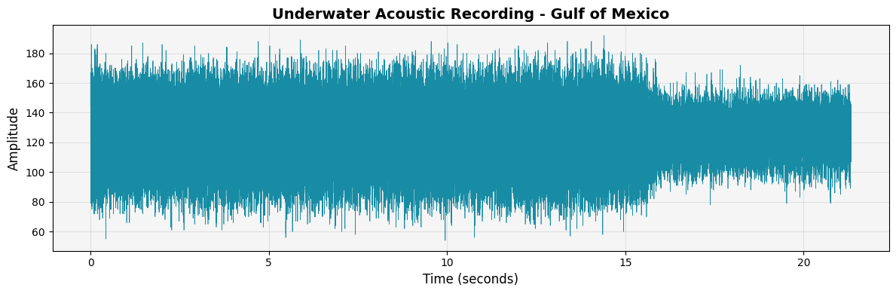
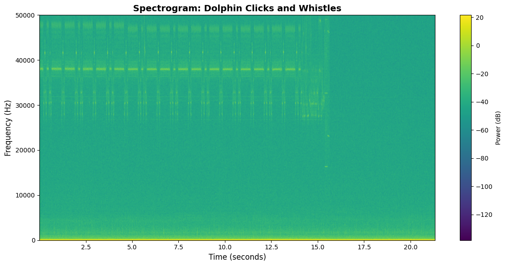
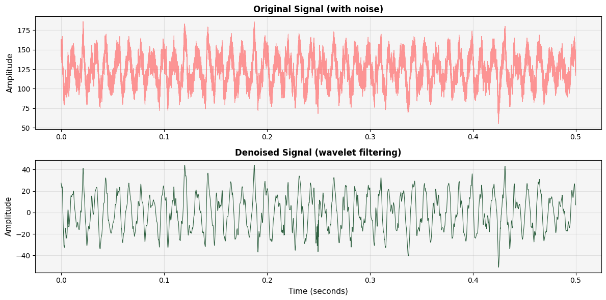

"So long, and thanks for all the fish data"
A Python toolkit for analyzing underwater acoustic recordings and understanding dolphin communication patterns
Dolphain is a scientifically rigorous Python package for analyzing underwater acoustic recordings from the Gulf of Mexico. Our mission: decode dolphin communication patterns through clicks and whistles.
We're working with EARS (Ecological Acoustic Recorder) data sampled at 192 kHz, perfect for capturing the 2-20 kHz range where dolphins communicate with each other.
Real outputs from analyzing Gulf of Mexico underwater recordings. All visualizations generated from actual EARS data files.
Time-domain visualization of a 21-second underwater recording. Each peak represents acoustic energy from marine life, boats, or environmental noise.
import dolphain data =
dolphain.read_ears_file('recording.210')
# Plot the waveform
dolphain.plot_waveform(data)
Frequency-time representation showing where dolphin communication happens. Whistles appear as contours in the 2-20 kHz range, while clicks show up as vertical lines at higher frequencies.
Before and after comparison showing how wavelet filtering removes background noise while preserving dolphin vocalizations. The denoised signal reveals clearer transient features for click detection.
# Clean the signal
denoised = dolphain.wavelet_denoise(data['data'])
# Compare results
dolphain.plot_denoising_comparison(data['data'], denoised,
data['fs'])
718587E0.210 recorded in the Gulf of Mexico as
part of the LADC-GEMM marine mammal monitoring project. Duration:
21.33 seconds, Sample rate: 192 kHz.
Cutting-edge acoustic analysis tools powered by advanced signal processing
NEW! Multi-band spectral analysis identifies exceptional acoustic features: harmonics, fast frequency sweeps, simultaneous signals, and spectral complexity. Automatically scores and ranks the most unique recordings.
Ultra-precise detection of dolphin echolocation clicks and communication chirps. Uses 99.5th percentile thresholding, regularity analysis, and sharp peak detection to minimize false positives.
Read and process EARS binary format (.130, .190, .210) with full metadata extraction.
Wavelet-based denoising using VisuShrink thresholding for clean acoustic data.
Beautiful spectrograms, waveforms, and comparative analysis plots with interactive audio players.
Process hundreds of files with progress tracking, checkpointing, and error handling.
Choose from standard detection (chirps & clicks) or unique signal mode. Resumable processing with checkpoint system.
Web-based gallery with synchronized waveform/spectrogram playback and audio controls. Explore the most interesting recordings.
Follow curated pods by energy, harmony, and flow in our interactive Branch Explorer.
Conservative detection of chirps (frequency sweeps >3kHz, 0.3s+) and click trains (15+ clicks, ultra-regular spacing).
python scripts/quick_find.py --mode standard
Hunt for exceptional features: multi-band activity, harmonic structures, ultra-fast sweeps, burst clicks, spectral complexity.
python scripts/quick_find.py --mode unique
Both modes output compatible results for the showcase generator. Choose based on your research goals!
# Clone the repository git clone
https://github.com/micha2718l/dolphain.git cd dolphain # Create
virtual environment python3 -m venv .venv source .venv/bin/activate
# On Windows: .venv\Scripts\activate # Install in development mode
pip install -e .
import dolphain
# Read an EARS file
data = dolphain.read_ears_file('data/recording.210')
# Create a quick overview plot
dolphain.plot_overview(data, fmax=50000)
# Denoise the signal
denoised = dolphain.wavelet_denoise(data['data'])
# View the difference
dolphain.plot_denoising_comparison(data['data'], denoised,
data['fs'])
Purpose: Navigation and hunting
Frequency: >110 kHz, peaks >220 kHz
Duration: Microseconds to milliseconds
Pattern: Rapid trains ending in "terminal buzz" (200+ clicks/sec)
Purpose: Social interaction
Frequency: 2-20 kHz
Duration: 0.5-1.5 seconds
Types: Signature whistles (individual "names"), pulsed calls
We're analyzing 100+ underwater recordings from the Gulf of Mexico, developing algorithms to automatically detect and classify dolphin vocalizations.
This work builds upon the LADC-GEMM project's extensive acoustic monitoring infrastructure. The consortium deployed autonomous underwater gliders, research vessels, and bottom-mounted EARS recorders throughout the Gulf to assess marine mammal populations and ambient noise levels following the Deepwater Horizon oil spill.
Ready to contribute? Jump to our Contribution Guide below to join the vibe coding revolution! 🚀
This entire project was built through "vibe coding" - a collaborative approach where human intuition meets AI capabilities. You don't need to be an expert. You just need curiosity, good vibes, and a willingness to explore! 🎨✨
The more human brains + LLM brains we get working together, the better. Let's decode dolphin communication as a team! 🧠🤖🐬
Combine your creative vision with AI's technical execution. You guide, AI builds.
Keep notes, update docs, track decisions. Future you (and others) will thank you!
Sessions end, windows close. Design your work to be resumable by anyone.
Get ideas flowing, iterate quickly, refine as you go. Progress > Perfection.
Create your own copy of the repository. You'll work here safely without affecting the main project.
git clone https://github.com/YOUR-USERNAME/dolphain.git
cd dolphain
git remote add upstream https://github.com/micha2718l/dolphain.git⚠️ Important: You cannot push directly to main. This is intentional! It keeps the project safe and encourages good collaboration practices.
Always work on a feature branch. Name it something descriptive.
git checkout -b feature/whistle-detection
# or
git checkout -b docs/improve-readme
# or
git checkout -b fix/batch-processing-bug💡 Tip: Use prefixes like feature/, docs/, fix/, experiment/ to keep things organized.
Get Python and dependencies installed. Use the AI to help you!
# Create virtual environment
python -m venv .venv
source .venv/bin/activate # On Windows: .venv\Scripts\activate
# Install in editable mode
pip install -e .
# Install dev dependencies if you're adding tests
pip install pytest matplotlib numpy scipy🤖 Pro Tip: Ask your AI assistant: "Help me set up the Dolphain development environment"
Before diving in, understand where we are. These docs are your map!
📖 Why? These docs minimize lost time when context windows clear or collaborators switch.
What sounds fun to you? Choose based on your interests!
Build tools like the Dolphin Composer, make visualizations, have fun!
Get Inspired →Here's where the magic happens! Partner with an LLM to build.
🌟 Remember: You're the creative director. The AI is your implementation partner.
Make small, frequent commits with clear messages.
git add dolphain/signal.py
git commit -m "Add whistle detection using spectrogram peaks
- Implement peak finding with scipy
- Add frequency range filtering (2-20 kHz)
- Include docstrings and type hints
- Add basic unit tests"
git push origin feature/whistle-detection💎 Good commits: Explain WHAT and WHY, not just WHAT. Future readers will love you!
Before you finish, update relevant documentation.
README.mdPROJECT_STATUS.md with what's complete
SESSION_STATE.md with your
progress
WHISTLE_DETECTION.md)
📚 Why? Documentation is a gift to the next contributor (who might be you in 3 months!).
Share your work! Go to GitHub and open a PR.
PR Template to use:
## What This PR Does
Brief description of the feature/fix
## Changes Made
- List of specific changes
- Be clear and concise
## Testing
How you tested this (manual tests, unit tests, etc.)
## Documentation Updated
- [ ] README.md
- [ ] PROJECT_STATUS.md
- [ ] Relevant guide docs
- [ ] Inline code comments
## Notes for Reviewer
Anything special to know? Any decisions you made?
## AI Collaboration Notes
Which AI you used, what worked well, any challenges?🎉 Celebrate: You just contributed to dolphin communication research!
Start every session with: "Let's create a SESSION_NOTES.md to track what we do today." This helps when you resume later or hand off to another contributor.
# Session Notes - 2025-10-11
## Goal
Implement basic whistle detection using spectrogram analysis
## Context
- Read CONTINUATION_GUIDE.md
- Whistle detection is marked as "In Development"
- Need to work in dolphain/signal.py
## Progress
- [x] Implemented spectrogram generation
- [x] Added peak detection for whistle candidates
- [x] Created unit tests
- [ ] Need to add frequency filtering
- [ ] Need to test on real EARS data
## Next Steps
1. Add frequency range filtering (2-20 kHz)
2. Test on multiple EARS files
3. Document the approach
4. Update PROJECT_STATUS.md
## AI Used: GitHub Copilot
## Issues Encountered: None major
## Time: ~2 hoursResist the temptation to fix "just one more thing." Keep branches focused. It makes reviews easier and reduces merge conflicts.
Ask your AI to write tests! Even simple tests catch bugs and show future contributors how your code works.
pytest tests/
# Make sure existing tests still pass!In PRs, commits, and docs - explain your thinking. What seemed obvious today will be mysterious in 6 months.
Pull changes from upstream often to avoid nasty merge conflicts.
git fetch upstream
git merge upstream/main
# Fix any conflicts locallyFirst version doesn't need to be perfect. Get it working, get feedback, improve. That's the vibe coding way!
Absolutely! Some of the best contributions come from fresh perspectives. Focus on code quality, documentation, testing, or tooling. The scientific knowledge can be learned along the way!
Perfect! This project is a great place to learn. Start small: ask your AI to explain existing code, help write tests, or improve documentation. Build confidence gradually!
That's expected! That's why we emphasize documentation. Check SESSION_STATE.md, ask the maintainer (Michael) for guidance, or create a GitHub issue explaining where you got stuck. The community is here to help!
Check the issues! Look for "good first issue" or "help wanted" tags. Or read CONTINUATION_GUIDE.md and pick something that sounds interesting. When in doubt, ask in a GitHub issue!
Yes! Create an
experiment/your-idea branch and explore. Document
what you learn. Some of the best features started as experiments!
That's okay! You still learned something valuable. PRs might not merge because of timing, scope, or direction changes. Feedback helps everyone improve!
The dolphins are waiting for you to help decode their language! Pick a path, grab your AI buddy, and let's vibe code together! 🐬✨
Ready to help decode dolphin communication?
Listen to the most interesting dolphin vocalizations from the Gulf of Mexico with interactive audio and synchronized spectrograms.
🎵 Open ShowcaseCreate your own dolphin-like sounds with our interactive synthesizer. Experiment with frequencies, patterns, and effects!
🎹 Launch ComposerNavigate curated pods organized by energy, harmony, and flow in our interactive branch explorer.
🌳 Browse Branches